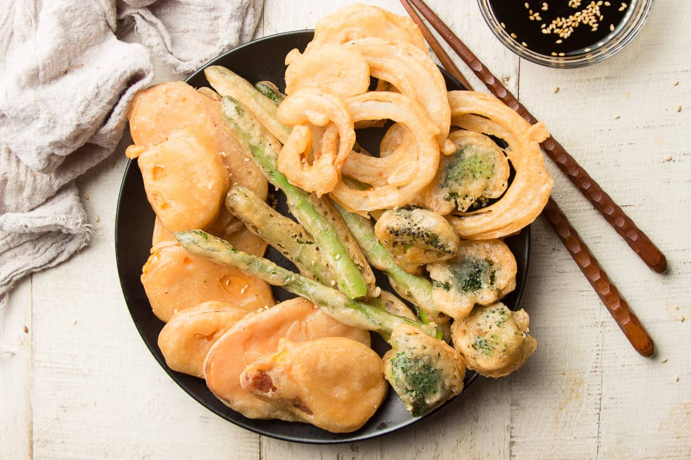

Delicacies to Try in Tokyo
Japanese cuisine offers a unique and unforgettable culinary experience that attracts food lovers from around the world. From the delicate artistry of sushi to the crispy perfection of tempura and the smoky flavor of yakitori, every dish reflects Japan’s deep respect for quality and tradition. Visitors can enjoy meals that are as visually stunning as they are delicious. Whether dining in a bustling Tokyo market or a serene Kyoto teahouse, Japanese food is a journey in itself.

SUSHI
